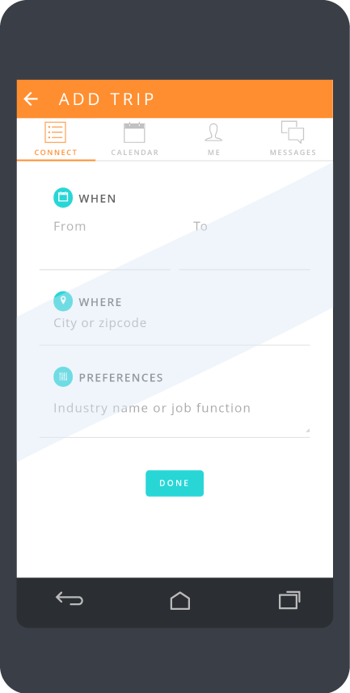
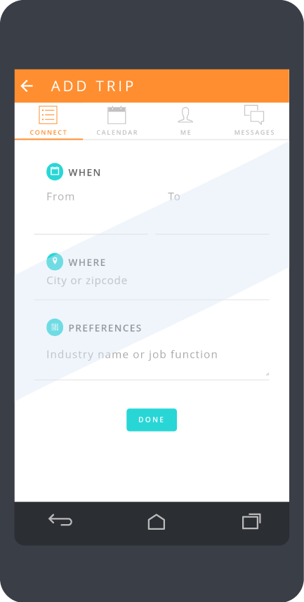

Design Thinking Mobile App
UI/UX Design, Front-end Code
Platform
Android mobile app via Adobe PhoneGap
Background
This mobile app was commissioned by Helen Liang of UstartX Inc. for the Computer Science/Computer Science & Engineering department’s senior design project course.
Goal
To create a mobile app that simulates the quick-thinking and intuitive nature of the design thinking process and records a user’s progress with each step.
Process
The client, Helen Liang, wanted an app that would facilitate the design thinking process on-the-go. Working in a team of four, I took the reins on designing the interface.
My initial idea was to make the app an all-encompassing design thinking “toolbox”. Each step of the design thinking process could be navigated using the color-coded tabs at the top: blue for Empathy, green for Define, yellow for Ideate, orange for Prototype, and red for Test (as inspired by Stanford d.school’s representation of the process).

A Holistic Toolbox
The iOS- and Instagram-inspired navigation bar would contain different utilities: camera, video camera, voice recorder, notepad, timer, and brainstorming tools, which would vary depending on the current tab, or step, of the process. The user would be able to use any of these at will—no constraints, just constantly accessible tools to meet the user’s current needs.
After getting feedback on this design, we learned that our client had wanted a more heavily guided, step-by-step demonstration of the process. Basically, each use of the app (which would ideally be completed within an hour) should result in a prototype that aims to solve a problem concerning the topic of interest.
We then opted to model the app’s flow after Stanford d.school’s crash course. Both beginner-friendly and fast-paced, this procedure would give users a good introduction to design thinking and would yield tangible results in a short amount of time.
My design concept was to take the above procedure and let it play out like a game—I was thinking WarioWare or Dumb Ways to Die—in which players were subject to a series of “mini-games” that were to be completed within an allotted amount of time.
Fast-Paced Fun
In the same vein as the aforementioned games, the app would take the user through sub-steps of the design thinking process, each with a specific goal and with a time limit to keep the user’s ideas as visceral as possible.
We would limit the amount of text displayed on each page and use overlays to provide additional information. We wanted goals to be the focus of the page, when applicable, and every explanation to be broken down to make it easier to digest the overwhelming amount of information provided.
All throughout, the user would be prompted to take a picture of any notes, sketches, or prototypes to keep track of the progress made.
Final Product


 
